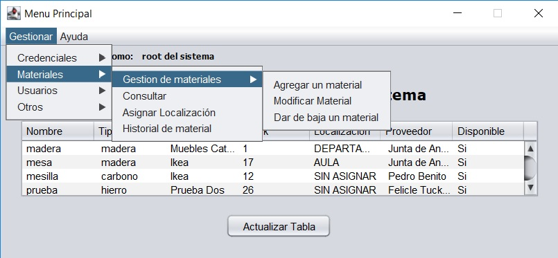

Gestion de materiales
Ambos tipos de usuarios poseen esta funcion, en ella el usuario podra gestionar los materiales que están actualmente registrados en la base de datos. Entre las diferentes funciones que tiene se encuentra:
- Gestion de materiales, en las cuales el usuario podra agregar, editar o dar de baja a un material
- Buscar un material por diferentes opciones y hacer un listado PDF de esa busqueda
- Asignar una localizacion a ese material
- Comprobar el historial del material, por donde a pasado
Imagen del panel en cuestion
